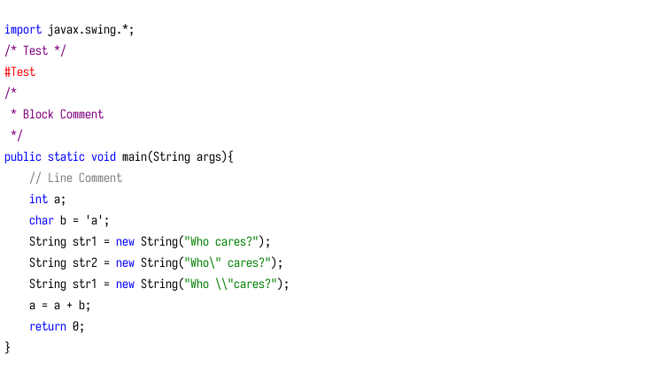

Syntax Highligh.hs
Contents
Syntax Highligh.hs#
提示
这是一篇迁移自 Jekyll 的文章，如有格式问题，可到 ⛺ SilverRainZ/bullet 反馈
书还没看完，不过还是很想用Haskell写点什么出来，所以简单地实现了一个基于替换的Java代码高亮。
不过这种替换的做法有很大的问题，当你的字符串或者注释里出现了关键字，那么里面也会被高亮， 有个想法就是将整段代码按是否高亮划分为一些元素:
关键字
字符
宏
字符串
块注释
行注释
数字
函数
空白
其他
然后按顺序一个个用正则取出，使得每一个元素都只能被着色一次，不过这个想法暂时没实现。
正则#
双引号的转义#
另外遇到的问题是正则表达式，首先是双引号内字符串的匹配问题，对正则不熟悉， 试了很多次都没法匹配，因为考虑了反斜杠 对引号的转义问题，从语言描述上可以说：
匹配两个引号之间的尽量短的所有内容，并且内容中不能包含回车和没有被转义的引号 （即只能包含左侧有奇数个反斜杠的引号）
写正则实在是太烧脑子了，匹配奇数个可以用 [^\\]((\\\\)*\\") ，
然后最后面的引号只能左侧包含偶数个引号 [^\\]((\\\\)*")
（本来可以将两个分组用后向引用省略了，试了一下发现错误，也不知道怎么解决）
最后写出来是恶心的表达式："(.|[^\\](\\\\)*")*?[^\\](\\\\)*"，但是还是有问题:
“regexp”
匹配 “regexp”
“regexp"regexp”
匹配 “regexp"regexp”
“reg " exp”reg”exp”
匹配 “reg " 和 “reg”
“reg "””regexp”
匹配
"reg \\"和""regexp"
就最后一个错了，因为”也是满足[^\\](\\\\)*"的，懒得再想了。
反斜杠的转义#
还有一个问题，也是转义，本来为了代码的简洁，将正则表达式写在了文件里，每行一个， 逐行读取，接下来读每个正则对应的颜色，代码很漂亮：
handle <- openFile "keywords.txt" ReadMode
pattern <- sequence . replicate 5 . hGetLine handle
color <- sequence . replicate 5 . lhGetLine handle
let patCol = zip pattern color
后来发现没法匹配块注释/\*(.|\n)*\*/，原因在于表达式里面的n只是代表回车，
而当你从文件里面读 “n” 的时候，他就真的是“n” 了，他代表一个反斜杠和一个字符n。
你没法从文件的一行里面读取一个回车吧，并且n后面还有内容，所以这种方案失败，
我只把关键字放在了文件里。代码变成了：
pattern' = [ "/\\*(.|\n|\r)*\\*/"
, "//.*"
, "#.*"
, "\"(.|(\\\\\\\\)*\\\\\")*[^\\\\](\\\\\\\\)*\""
]
color = ["Purple", "Gray", "Red", "Green", "Blue"]
main = do
keywords <- readFile "keywords.txt"
let pattern = pattern' ++ [keywords]
patCol = zip pattern color
这里又引发一个问题是：之前本来不用转义的 " 变成了 \"，需要转义一次的 \\，变成了\\\\，
表达式更难看了。 而且需要注意到的是最难看的那个表达式里面的懒惰匹配 “?” 没有出现，
我一加他就出错。所以出现了更多的问题，效果比在测试器里面的还差。
2015.3.2 update:
事实上Haskell的Posix库的底层是C的Regex.h,并且Posix规范的正则并不支持懒惰匹配。
Haskell#
除了了上面那些讨厌的问题之外，对于Haskell本身，也有一些不适应的地方。
IO用起来束手束脚#
Haskell的IO()像是一种具有传染性的代码（诶我说的不是GPL），一个函数中一旦出现了IO操作， 函数的返回值就被限定为 IO()，导致你没法往外传参数，除非你把值包裹在IO()里变成IO(String)这样一种结构， 调用这个函数的函数也必须是IO操作，这一循环直到main才终止。当然Haskell这样做肯定是有它的理由的， 但是他们所说的“纯粹与非纯粹的分离”，我还暂时体会不到这样做的好处。
不知道这么写是否合适#
我将正则保存在一个列表，将每个正则对应的颜色保存在另一个列表， 再从文件里读取匹配关键字的正则加在第一个列表的尾部，合并两个列表；
将要着色的文件读出，传给htmlen函数；
htmlen函数调用rep函数对代码进行着色（用左折叠flodl的方式调用）， 然后为返回的结果加上html的头部尾部标签还有样式；
rep函数接受htmlen传给的文件内容，以及存有正则和颜色的二元组， 每一次对文件中匹配该表达式的模式加上<font color>标签
不知道这么写是否正确， 什么才是好的代码， 这个问题至今还是很模糊啊。 （不过谈论这个问题之前应该把前面那些问题先解决了才是）
import System.IO
import Text.Regex.Posix
type Pattern = String
type Color = String
{- Highlighter in Haskell -}
main :: IO()
main = do
putStrLn "Reading config..."
keywords <- readFile "keywords.txt"
let pattern = pattern' ++ [keywords]
patCol = zip pattern color
putStrLn "Processing..."
contents <- readFile "test.java"
writeFile "test.java.html" $ htmlen contents patCol
putStrLn "Finished."
htmlHead = "<!DOCTYPE html><head><meta charset=\"utf-8\"></head>"
htmlStyle = "<style>code{font: 14px/200% \"Consolas\";}</style><body><pre><code>"
htmlLast = "</code></pre></body></html>"
htmlen :: String -> [(Pattern, Color)] -> String
htmlen str patCol = let htmlBody = foldl rep str patCol
in htmlHead ++ htmlStyle ++ htmlBody ++ htmlLast
rep :: String -> (Pattern, Color) -> String
rep code patCol@(pattern, color)
| code =~ pattern == True
= (\(_head, x, _tail) -> _head ++ ls ++ x ++ le ++ rep _tail patCol)
(code =~ pattern)
| otherwise = code
where ls = "<font color=" ++ color ++ ">"
le = "</font>"
pattern' = [ "/\\*(.|\n|\r)*\\*/"
, "//.*"
, "#.*"
, "\"(.|(\\\\\\\\)*\\\\\")*[^\\\\](\\\\\\\\)*\""
]
color = ["Purple", "Gray", "Red", "Green", "Blue"]
最后的结果如下：
可以看到最后一个字符串是着色错误的。
如果你有任何意见，请在此评论。 如果你留下了电子邮箱，我可能会通过 回复你。